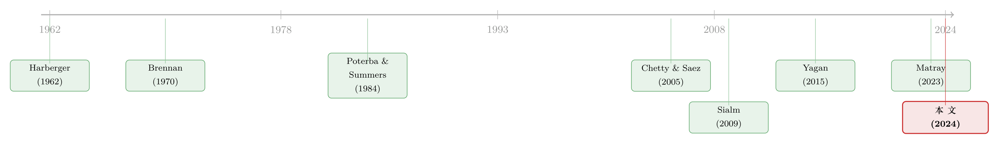

个人税，悄悄定价了你的股票——一个来自伦敦 AIM 的干净实验
本文读的是 Kontoghiorghes (2024, Journal of Financial Economics)：作者利用英国 2013 年「允许 AIM 股票放进免税账户 ISA」这一外生政策，做了一个干净的双重差分。结论是——投资者个人层面的资本利得税与股息税，确实被资本化进了股价（AIM 股票的超额收益恰好下降了它们减税前的有效税率，约每月 0.9 个百分点）；与此同时，被减税的公司还实打实地多发了股息、多发了股和债、多投了资本和人力。一句话：散户口袋里的那点税率，沿着「股价 → 资本成本 → 公司决策」的链条，一路传导到了真实经济。
1 引言：一个「人人都信、却几乎没人证明过」的命题
先抛一个看似常识、却异常难证的问题。
你买一只股票，最终落进你口袋的，从来不是税前收益，而是税后收益。资本利得税、股息税，会在你卖出或分红的那一刻，从回报里切走一块。既然如此，一个理性的投资者，理应要求那些「税更重」的股票给出更高的税前回报来补偿——否则我为什么要持有它？这就是 Brennan(1970) 那条著名的税收资本化假说 (tax capitalization hypothesis)：股价会高效地调整，去反映边际投资者所承担的税负。
听起来天经地义。可问题在于——几乎没有人能干净地把它证出来。
为什么？因为税收变化几乎从不「单独发生」。一国政府调税，往往正赶上经济周期的拐点、财政的宽紧、通胀的起落。于是当你看到「税率变了、股票回报也变了」时，你永远说不清：到底是税在推动回报，还是背后那些宏观因素同时推动了两者？这正是 Poterba(2001) 和 Graham(2003) 反复强调的困境——关于个人投资税如何影响资产回报，实证证据出奇地稀薄。
更让人头疼的是另一条战线。如果个人税真的影响股价、进而影响公司的股权资本成本，那它就应该顺势影响公司的真实决策：发不发股息、要不要增发、投不投资、招不招人。这就是公司投资理论里所谓的「传统观点」(traditional view)（Harberger, 1962；Feldstein, 1970；Poterba and Summers, 1983）。可偏偏，最有名的那篇实证——Yagan(2015) 研究 2003 年美国股息减税——没有找到对投资的任何影响；而 Moon(2022)、Matray(2023) 给出的，则是看似互相打架的结论。
于是局面就僵在这里：理论无比优雅，证据要么没有、要么矛盾。这篇论文要做的，就是找到一把足够锋利的「手术刀」，把这两个命题——个人税被资本化进股价、个人税改变公司决策——第一次同时、干净地切出来。
2 那把手术刀：AIM 与 ISA
接着，一个自然的问题是：到哪儿去找这样一个外生的、只动「个人税」而不惊动宏观大盘的实验？
作者找到的，是英国 2013 年的一桩立法变化。要看懂它，先认识两个名字。
第一个是 AIM（Alternative Investment Market，另类投资市场），伦敦证券交易所 (LSE) 旗下专为中小成长型公司设立的子市场，1995 年开张，门槛低、上市费便宜、信息披露要求也更宽松。Doukas and Hoque(2016) 发现，约一半的 AIM 公司其实够格去主板，但宁愿留在 AIM 省钱。
第二个是 ISA（Individual Savings Account，个人储蓄账户）。这是英国版的「免税投资账户」——放进 ISA 里的投资，资本利得和股息全部免税，而且不像美国的 IRA，提前取钱没有罚则。2013 年，超过三百万英国成年人（约占成年人口 6%）持有「股票型 ISA」，总市值超过 £2000 亿（约 \$3000 亿）——这个数字，把当年整个 AIM 才 £760 亿 的市值衬得很小。
关键的转折在这里：主板 LSE 股票一直可以放进 ISA，但 AIM 股票从来不行。 直到 2013 年 7 月 3 日，英国财政部宣布——8 月 5 日起，AIM 股票首次获准进入 ISA。
想清楚这一步为什么「干净」：政策只取消了 AIM 这一类股票、对 散户这一类投资者的资本利得税与股息税。它不碰主板股票，不碰机构投资者，也不碰任何宏观变量。于是主板股票天然就是一个现成的「对照组」——它们的税收待遇在整个样本期里纹丝不动。
减税前，AIM 100 成份股的平均有效税率 (effective tax rate) \(\tau^e\) 是每年 10.7%，折合每月 0.9%；而主板 FTSE 股票，因为早就能进 ISA，有效税率是 0%。这个 \(\tau^e\) 怎么算的？它是「有效资本利得税率」（资本利得税率 × 净回报）与「有效股息税收益率」（股息税率 × 股息率）之和的平均。换句话说，2013 年这一纸立法，把 AIM 股票的有效个人税率，一夜之间从 10.7% 砍到了 0。
减税幅度之大、边界之清——这就是作者要的那把刀。
3 识别策略：把「像」做到极致
然后，真正关键的一步在于：对照组不能随便挑。
理想的对照组，应该是「一批没被减税的 AIM 公司」——可惜政策对全体 AIM 一刀切，这条路堵死了。退而求其次，就得从主板里挑出一批尽可能像 AIM 的公司，好让平行趋势 (parallel trends) 这个 DiD 的命根子站得住。
作者用的是倾向得分匹配 (propensity score matching)。匹配的协变量有五个：公司规模、年龄、行业、市账比（价值）、市场 beta——全是资产定价文献里公认的「股价与公司行为的驱动因子」。
匹配前后的对比，是这篇论文里最有说服力的一张「体检报告」（见表 1）。在全样本 FTSE 与 AIM 的对比中，八个特征里有六个的均值差异在统计上高度显著——两组天差地别。可一旦做了倾向得分匹配，所有特征的均值差异都变得统计上不显著：匹配后的 FTSE 样本与 AIM 样本，在 99% 置信水平上统计意义上无法区分。作者还额外算了 Dimson(1979) Beta（校正非频繁交易），两组依然无法区分。
但匹配只能保证「可观测的特征」对齐。为了防止仍有看不见的基本面差异污染趋势，作者在分析超额收益时还塞进了资产定价文献里的主要风险因子（Fama-French 五因子 + Carhart 动量 + Pástor-Stambaugh 流动性因子），并同时报告了未匹配对照组的结果。识别的底层假设，和 Yagan(2015)、Moon(2022)、Matray(2023) 一脉相承：不是「公司随机地选择上 AIM 还是上主板」，而是「在没有减税的反事实世界里，AIM 与匹配后的主板公司，其结果变量会沿着相似的轨迹演进」。
至于「会不会有人提前抢跑」——作者也认真排查了：宣布到生效只隔了一个月，散户来不及大动；ISA 每年有额度上限，想加仓也加不进；而散户本就以「惯性、懒得再平衡」著称（Madrian and Shea, 2001；Sialm et al., 2015）。所以预期效应 (anticipatory effects) 不太可能很大。同期唯一沾边的事件——2014 年取消 AIM 股票 0.5% 的印花税——幅度太小，对长期持有者几乎可忽略。
4 理论锚点：Brennan(1970) 的那条定价式
要理解作者到底在「检验什么」，得先把理论的锚抛下去。这一节我们一步步走。
如 Sialm(2009) 一样，作者把分析建立在 Brennan(1970) 之上。出发点是一条「带税」的均衡定价式——它是 Brennan(1970) 原文方程 2.18 的一个更一般化版本：
$$ E(R_i - R_f) = \tau_i + \beta_i' X_i $$
我们把它逐项拆开来看。左边 \(E(R_i - R_f)\) 是股票 \(i\) 的税前预期超额收益。右边第一项 \(\tau_i\) 是税收溢价 (tax premium)——它正是投资者为「承担资本利得税与股息税」所要求的那块补偿；第二项 \(\beta_i' X_i\) 里，\(X_i\) 装着一组被定价的风险因子（在 Brennan 原版里只有市场超额收益，Sialm(2009) 把它扩展成 Fama-French-Carhart 因子），\(\beta_i\) 度量每个因子要求补偿的方向和大小。
对最核心的这条式子，我们把它的「业务含义」标注出来：
直觉是这样的：在一个回报被这条式子完美解释的世界里，估计出来的税收溢价 \(\tau_i\)，应当等于边际投资者的有效税率。 如果 AIM 股票的边际投资者是散户，他们一年再平衡一次、并预期实现资本利得而不递延（正如 Brennan(1970) 的设定），那么我们就能估出他们减税前承担的有效税率，也就是 AIM 的税收溢价。
现在，逻辑链条闭合了：减税之前，AIM 股票背着一个为正的 \(\tau_i\)；2013 年这块税被抹平到 0。那么——AIM 股票的税前超额收益，就应当下降一个恰好等于 \(\tau_i\) 的幅度。 这个 \(\tau_i\)，数据告诉我们是每月 0.9 个百分点。论文要检验的第一个、也是最干净的预言，就是它。
由此可以引出作者明确写下的两个假设。其一（隐含在上式里）：减税应使 AIM 超额收益永久性地下降其减税前的有效税率。其二，写成 Hypothesis 2：若公司管理层在决定派息时把投资者的个人税考虑在内、且个人税通过资本成本影响投资的边际回报（即「传统观点」成立），那么减税后我们应看到股息、股权与债务发行、资本与劳动支出全面上升；反之，若公司的派息与投资只取决于留存收益、个人税无关紧要（即 King, 1977；Bradford, 1981；Auerbach, 1979 的「新观点」(new view)），则这些都不该动。
一个实验，同时把「资产定价」和「公司金融」两条预言摆上了检验台。
5 反转与落点：税，真的「穿透」了
于是，结果出来了——而且四个结果，环环相扣。
第一，股价被资本化。 减税之后，AIM 股票的超额收益永久性地下降了，而且其幅度，数据无法拒绝它等于减税前那十年的平均有效税率——每月 0.9 个百分点。更妙的是异质性检验：把 AIM 股票按减税前有效税率排序，那些税率最高和税率最低的股票，在减税后的十年里，超额收益出现了与各自税率相称的下降。结果在多种因子模型设定下都稳健，在更严苛的（不依赖对照组的）DiD 设定下也成立。这是对 Brennan(1970) 的直接支持，也给 Poterba and Summers(1984)、Sialm(2009) 那些基于时间序列回归的相关性发现，补上了因果的一环。
第二，股息暴涨。 减税后，派息的 AIM 公司把股息提高了 40%，折算成对「1 减股息税率」的弹性是 0.55。这个数字非常耐人寻味——它与 Chetty and Saez(2005)、Yagan(2015) 估计的 2003 年美国股息减税弹性、以及 Matray(2023) 估计的 2013 年法国股息增税弹性，几乎严丝合缝地吻合。公司的派息政策，确实随股东的税收偏好起舞（Desai and Jin, 2011；Bilicka et al., 2023）。（关于「现金为什么一定要还给股东」这件事的另一面，可参见《现金为什么一定要「还」出去？——四十年后，重读 Jensen 的自由现金流》。）
第三，股与债一起发。 减税抬高了股价、压低了股权资本成本，于是 AIM 公司顺势融资：相比匹配对照组，发行股数增加约 13%，债务/减税前资产之比上升约 14 个百分点。有意思的是分化——新股发行由现金约束型公司主导（它们最缺钱、最受益于更便宜的股权），而发债则更普遍。这印证了 Graham(1999)、Lin and Flannery(2013) 的发现：公司的资本结构决策，会被其投资者的个人税水平所左右。
第四，也是对 Yagan(2015) 最直接的回应——真实投资上来了。 减税后，AIM 公司大幅扩张资本存量与劳动支出：有形资本存量（具体是房产、厂房与设备 PP&E）/减税前总资产上升 24 个百分点，总薪酬/减税前营收上升 8 个百分点，雇员数/减税前营收上升 0.5 个百分点。汇总成对「1 减股息税率」的弹性，整套数字是：股息 0.5、增发股 0.2、债务 2.2、资本 1.8、总薪酬 0.5、雇员 1.4。
这就是那个反转：Yagan(2015) 在 2003 年美国股息减税里没找到投资效应，本文却找到了大而清晰的效应。为什么？作者把差异归因于几个维度——其一，英国这次减税把 AIM 与主板的税收待遇拉平，更像一次永久性减税，而股价是前瞻的、投资要多年才回本，公司只有相信减税是永久的才敢动手；其二，Yagan 的样本是私人持股的成熟公司，本文的样本是更年轻、公众持股、融资约束更松、更爱靠增发融资成长的公司（Korinek and Stiglitz, 2009；Chetty and Saez, 2010）；其三，本文同时砍掉了资本利得税和股息税，合力自然大于只砍股息税。
落点也在异质性里浮现得很清楚：派息公司减税后扩张资本显著少于不派息公司；而增发股与债最多的公司，投在资本与劳动上的也最多——这与 Korinek and Stiglitz(2009) 强调「公司成熟度决定投资行为」的生命周期模型相合。作者还发现，加薪幅度与股东持股集中度正相关，叠加「资本投资与派息呈负相关」这一观察，又给 Chetty and Saez(2010) 的代理模型（管理层与股东在派息和投资上的张力）添了一笔佐证。
把这四步连起来，全文其实只在反复讲透一件事：散户口袋里那 10.7% 的有效税率，不是一个孤立的数字，它沿着 \(\tau_i \to\) 股价 \(\to\) 股权资本成本 \(\to\) 公司派息/融资/投资/招工 这条链，一节一节地传导到了真实世界。这，就是「传统观点」最完整的一次实证显形。
6 文献脉络
如果把这条研究线索拉成一条河，源头其实在公司税的归宿问题上。
最早，Harberger(1962)、Feldstein(1970)、Poterba and Summers(1983) 奠定了「传统观点」——个人税通过资本成本影响公司投资；与之针锋相对的是 King(1977)、Bradford(1981)、Auerbach(1979) 的「新观点」，认为投资只看留存收益、个人税无关紧要。这场争论，至今未息。

资产定价这一支的源头是 Brennan(1970)：税被资本化进股价。Poterba and Summers(1984) 用不同税制下的时间序列，发现「税收变化能影响证券回报」；Sialm(2009) 进一步证明美国投资者为股息税负获得了补偿。但这一支始终困于内生性——税变与宏观纠缠不清。
公司金融这一支则在「减税如何改变公司行为」上累积证据：Chetty and Saez(2005) 用 2003 年美国股息减税，发现派息显著上升；Yagan(2015) 顺着同一改革看真实投资，却一无所获；Moon(2022) 在韩国的资本利得税减税里找到了大的投资效应；Matray(2023) 在法国的股息增税里看到投资与增长被抑制。结论的分歧，恰恰为「换一个更干净的实验」留出了空间。
这篇论文的位置，正卡在两条支流的交汇处：它用一个只动个人税、不惊动宏观的英国实验，第一次把「税被资本化进股价」与「税改变公司真实决策」同时证出来——既给资产定价那一支补上了因果，又给公司金融的「传统 vs 新观点」之争投下了一记偏向「传统观点」的砝码。
7 评论与延伸（Q&A + 研究方向）
(a) 几个可能的疑问
Q：把主板 FTSE 当对照组，平行趋势真的可信吗？AIM 公司明明更小更年轻。
这正是作者最下功夫的地方。原始的 FTSE 与 AIM 八个特征里六个显著不同，但经过倾向得分匹配（规模、年龄、行业、价值、beta），匹配后样本在 99% 置信水平上统计无法区分；分析回报时还叠加了五因子+动量+流动性因子，并同时报告未匹配结果。不能说零隐患，但已是这个设定下能做到的上限。
Q：「超额收益下降 0.9%/月」会不会只是减税后 AIM 股价一次性跳涨、之后回报自然变低的假象？
注意论文说的是永久性下降，而非一次性跳升后的回落，且幅度恰好等于减税前十年的平均有效税率，并在「高税率股 vs 低税率股」的横截面上呈现相称的下降。这种「按税率高低分化」的模式，很难用单纯的一次性重定价来解释——它正是税收资本化的指纹。
Q：为什么结论和 Yagan(2015) 反过来？是谁错了吗？
不是对错，是设定不同。作者给了三条解释：英国这次是把税率拉平、更像永久减税（股价前瞻，公司才敢投长期项目）；样本是年轻、公众持股、约束更松的成长型公司；且同时砍了资本利得税与股息税，合力更大。两篇放在一起，反而说明「个人税影响投资」是有条件的——条件就是永久性、融资弹性和减税的完整性。
Q：所谓「边际投资者是散户」，这个假设硬吗？
这是把估计出的税收溢价解读成「散户有效税率」的关键前提。政策本身只惠及散户（机构本就不在 ISA 框架内），而回报恰好按 AIM 减税前的有效税率下降，反过来给「散户是边际定价者」提供了证据。但严格说，这是结果在支持假设，而非独立验证——若边际投资者结构在减税后本身发生了迁移，解读要更小心。（散户到底栖息在哪些股票上，可参见《散户的栖息地：他们不是更笨，只是去了别人不愿去的地方》。）
Q：发债弹性高达 2.2，是不是高得不太真实？
这是「相对减税前资产」的比率口径，AIM 公司基数小、债务原本低，弹性容易被放大，需谨慎对待绝对数值。但定性方向是清楚的：股权成本下降后，公司股债双增，且发债比发股更普遍——这与资本结构对股东个人税敏感（Lin and Flannery, 2013）一致。
Q：这是「新观点」被证伪了吗？
在这个样本上，是的——派息、增发、投资、招工全面上升，与「投资只取决于留存收益、个人税无关」的新观点矛盾，与「传统观点」相合。但新观点本就更贴合成熟、现金充裕、靠留存收益投资的公司；AIM 这批年轻成长公司恰是它最不适用的场景。所以更准确的说法是：公司成熟度决定了哪种观点占上风。
(b) 几个可能的研究问题与提案
1. 个人税资本化会外溢到信用市场吗？
【经济故事】本文显示股权资本成本随个人税下降而下降，公司随即增发债务。一个自然的延伸是：当一类公司的股权融资变便宜、信用质量改善后，它们已发行债券的二级市场利差会不会同步收窄？个人税冲击会不会沿「股 → 债」传导，重定价信用风险？ 【可行性】中。需要 AIM 公司减税前后已发债券的二级利差（受限于 AIM 公司发债样本小、数据稀），可用同一 DiD 框架，把结果变量换成债券利差或 CDS。识别清晰，难点在样本量与债券流动性。
2. 谁接住了这些新发的 AIM 股票？——边际投资者的迁移
【经济故事】减税把散户拉进 AIM，论文假设散户是边际投资者。但减税后究竟是散户占比上升、还是机构借势进场？边际定价者的身份变化，本身会反馈到 \(\tau_i\) 的解读上。 【可行性】高。论文已用 FactSet + UK Share Register 的持股数据。直接做「散户/机构持股份额」对减税的 DiD，即可检验边际投资者结构是否迁移，是本文数据的顺手延伸。
3. 永久 vs 临时：用「政策可信度」切开税收的投资效应
【经济故事】作者把自己与 Yagan(2015) 的差异归因于「永久性」。能否找到一个税改在公众预期中可信度逐渐变化的场景，直接检验「被视为永久的减税才会带动投资」这一机制？ 【可行性】中。需要一个对减税永久性有可观测异质预期的设定（如附带日落条款、或后续被反复延期的税改），用新闻/期权隐含信息度量「永久性预期」。识别有挑战，但机制干净、问题重要。
4. 外资持有人在个人税资本化里扮演什么角色？
【经济故事】ISA 只惠及英国本国散户，外资股东并不享受这块免税。若一只 AIM 股票的外资持股比例越高，则「边际投资者是免税本国散户」的前提越弱，税收资本化的幅度理应越小。这把「外资持有人」直接编进了资本化的横截面。 【可行性】中高。用 FactSet 的国别持股拆出外资比例，把它与各股票减税后超额收益的下降幅度交互。诚实地说，AIM 外资占比可能偏低，需先确认横截面变异是否足够。
我的判断
这篇论文最漂亮的地方，是实验设计本身。「个人税被资本化进股价」和「个人税改变公司真实决策」这两件事，过去要么困于宏观内生性、要么结论打架；而 2013 年 AIM 进 ISA 这个政策，恰好提供了一个只动个人税、边界清晰、对照组现成的设定，让作者一箭双雕。尤其是「超额收益下降幅度数据无法拒绝等于减税前有效税率 0.9%/月」、以及「按税率高低分化」的横截面证据，把 Brennan(1970) 那条抽象的资本化假说，第一次落成了可触摸的因果数字。
但有两点担忧值得放在心上。其一，外部效度：AIM 是一批又小又年轻、融资约束松、爱增发的成长公司，「传统观点」在这里大获全胜，未必能推广到成熟、现金充裕的大公司——本文恰好证明了 Yagan(2015) 之所以「无效」，也许正是样本性质使然，那么反过来，本文的「有效」同样受样本约束。其二，边际投资者假设：把税收溢价解读成「散户有效税率」高度依赖「散户是边际定价者」，而这一点更多是被结果反推支持、而非独立验证；若减税本身改变了持有人结构，解读需要更谨慎（这正是上面提案 2 想补的那块）。
后续我最想看到的，是把这条「个人税 → 资本成本 → 公司决策」的链，接到信用市场和外资持有人上去：当一类公司的股权成本被个人税冲击重定价，它的债券利差、它的国别持股结构会如何联动？那将把本文「股权侧」的故事，补成一幅完整的资本结构图景。
参考文献
Auerbach, A. J. (1979). Wealth maximization and the cost of capital. Quarterly Journal of Economics 93(3), 433–446.
Bradford, D. F. (1981). The incidence and allocation effects of a tax on corporate distributions. Journal of Public Economics 15(1), 1–22.
Brennan, M. J. (1970). Taxes, market valuation and corporate financial policy. National Tax Journal 23(4), 417–428.
Chetty, R., & Saez, E. (2005). Dividend taxes and corporate behavior: Evidence from the 2003 dividend tax cut. Quarterly Journal of Economics 120, 791–833.
Chetty, R., & Saez, E. (2010). Dividend and corporate taxation in an agency model of the firm. American Economic Journal: Economic Policy 2(3), 1–31.
Desai, M. A., & Jin, L. (2011). Institutional tax clienteles and payout policy. Journal of Financial Economics 100(1), 68–84.
Dimson, E. (1979). Risk measurement when shares are subject to infrequent trading. Journal of Financial Economics 7(2), 197–226.
Doukas, J. A., & Hoque, H. (2016). Why firms favour the AIM when they can list on main market? Journal of International Money and Finance 60, 378–404.
Feldstein, M. S. (1970). Corporate taxation and dividend behaviour. Review of Economic Studies 37(1), 57–72.
Harberger, A. C. (1962). The incidence of the corporation income tax. Journal of Political Economy 70(3), 215–240.
King, A. T. (1977). Estimating property tax capitalization: A critical comment. Journal of Political Economy 85(2), 425–431.
Kontoghiorghes, A. P. (2024). Do personal taxes affect investment decisions and stock returns? Journal of Financial Economics 162, 103927.
Korinek, A., & Stiglitz, J. E. (2009). Dividend taxation and intertemporal tax arbitrage. Journal of Public Economics 93(1–2), 142–159.
Lin, L., & Flannery, M. J. (2013). Do personal taxes affect capital structure? Evidence from the 2003 tax cut. Journal of Financial Economics 109(2), 549–565.
Matray, A. (2023). Dividend Taxes, Firm Growth, and the Allocation of Capital. NBER Working Paper Series 30099.
Moon, T. S. (2022). Capital gains taxes and real corporate investment: Evidence from Korea. American Economic Review 112(8), 2669–2700.
Poterba, J. M., & Summers, L. H. (1983). Dividend taxes, corporate investment, and 'Q'. Journal of Public Economics 22(2), 135–167.
Poterba, J. M., & Summers, L. H. (1984). New evidence that taxes affect the valuation of dividends. Journal of Finance 39(5), 1397–1415.
Sialm, C. (2009). Tax changes and asset pricing. American Economic Review 99(4), 1356–1383.
Yagan, D. (2015). Capital tax reform and the real economy: The effects of the 2003 dividend tax cut. American Economic Review 105(12), 3531–3563.